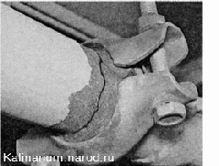

Проверка системы выпуска отработавших газовВ процессе эксплуатации автомобиля элементы выпускной системы подвергаются воздействию высокой температуры, отработавших газов, воды, снега и реагентов, которыми поливают дорогу зимой, атакже вибрации. Поэтому, какправило, отдельные элементы системы выпуска отработавших газов служат на автомобиле не более пяти лет. Перегорают перегородки в глушителе, появляется сквозная коррозия в стенках, нарушается герметичность соединения элементов системы выпуска. Такие неисправности приводят к повышению уровня шума выхлопа работаюшего двигателя. Для выполнения работы потребуется смотровая канава или эстакада. Последовательность выполнения 1. Подготавливаем автомобиль к выполнению работы. 2. Осматриваем подушки подвески основного и дополнительного глушителей. Подушки, имеющие трещины, разрывы и другие повреждения, необходимо заменить. 3. Нарушение герметичности системы выпуска отработавших газов определяем по следам нагара или местам прорыва газов. 
Прорыв газов через фланцевые соединения можно попробовать устранить подтягиванием элементов крепления. Герметичность соединения приемной трубы глушителя с каталитическим нейтрализатором можно восстановить заменой прокладки. Неисправные элементы системы, поврежденные сквозной коррозией, необходимо заменить. Восстановление элементов системы выпуска отработавших газов с помощью сварки дает только кратковременный эффект. |